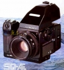

器材库 > 120中幅相机 > SQ-Ai

规格总览
产品类型
镜间快门单反机，可换镜头、后背、取景器和对焦屏
发布日期
1990-12
标称画幅
6 x 6cm
实际画幅
55.6 x 55.6mm
后背
Polaroid S型, SQ-i 120(6x6), SQ-i 120J(6x4.5), SQ-i 220 (6x6), SQ-i 220J (6x4.5), SQ-i 135N, SQ-i 135W
停产
是
取景规格
取景范围
94%
对焦屏
可更换
反光镜锁定
有
镜头和对焦
镜头卡口
Bronica S
镜头卡口类型
Bronica SQ四爪插刀式
标准镜头
Zenzanon-PS 80/2.8
曝光控制
多重曝光
有
快门
Seiko #0镜间快门
快门速度
16~1/500秒, B, T
闪光同步速度
最高1/500秒
其它规格
匹配SCA系统
可以
电池
4枚1.5V锂电池
电池检测
有
机身+120后背+标准镜头+取景器尺寸
92 x 109 x 179mm
机身+120后背+标准镜头+取景器重量
1515g
尼康992009-11-06 20:324.75 分
操作性 4.50功能性 5.00美观性 4.50趣味性 5.00耐用性 4.50性价比 5.00
南拳2007-07-16 14:334.75 分
操作性 4.50功能性 5.00美观性 4.50趣味性 5.00耐用性 4.50性价比 5.00
lf1352006-12-05 15:574.58 分
操作性 4.50功能性 4.50美观性 5.00趣味性 5.00耐用性 4.00性价比 4.50
zui97862006-07-26 00:184.92 分
操作性 5.00功能性 5.00美观性 5.00趣味性 5.00耐用性 5.00性价比 4.50
zui97862006-07-26 00:16
gaoderong2006-06-02 17:48
zxpwjh20002006-06-01 22:254.58 分
操作性 5.00功能性 5.00美观性 4.00趣味性 5.00耐用性 4.50性价比 4.00
zlj2006-04-16 22:124.58 分
操作性 5.00功能性 5.00美观性 5.00趣味性 4.00耐用性 4.00性价比 4.50
尚海2004-03-22 14:094.75 分
操作性 5.00功能性 4.50美观性 5.00趣味性 5.00耐用性 4.50性价比 4.50
gaoderong2004-03-21 19:104.17 分
操作性 4.50功能性 4.50美观性 4.00趣味性 4.00耐用性 4.00性价比 4.00
建筑2002-05-15 00:224.08 分
操作性 5.00功能性 4.50美观性 4.00趣味性 5.00耐用性 4.00性价比 2.00
李昂2002-05-13 20:034.25 分
操作性 4.50功能性 4.50美观性 4.50趣味性 4.00耐用性 4.00性价比 4.00
晴朗2002-04-14 11:423.5 分
操作性 4.00功能性 4.00美观性 4.00趣味性 2.50耐用性 4.50性价比 2.00
产品图 / 样片
碧浪 SQ-Ai
评测 / 相关文章
该产品暂无存档的评测文章